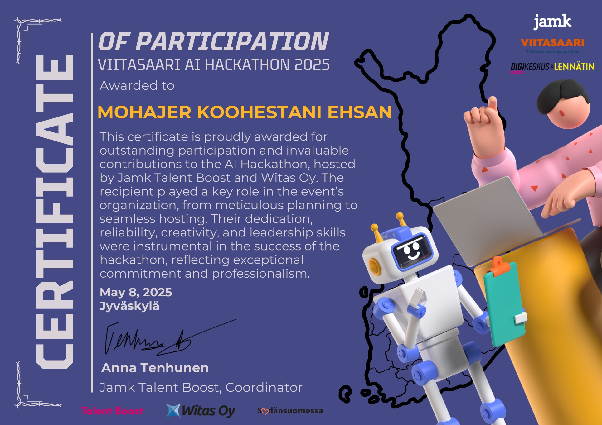
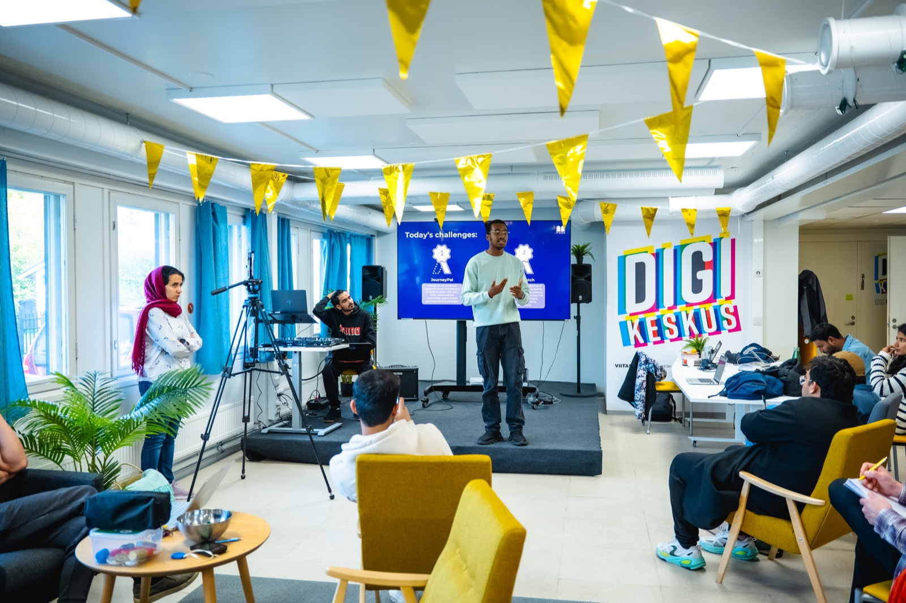

01 / PREPARE
Set up a useful challenge.
Help shape the activities, workshops and collaboration so participants have a clear starting point.
PROJECT CASE STUDY / COMMUNITY INNOVATION
During my time at Witas Oy in Central Finland, I helped host three hackathons connecting students, regional businesses and practical experimentation with digital tools and AI.
← Back to all projects
RECOGNITION · 8 MAY 2025
JAMK Talent Boost and Witas Oy recognised my contribution to the planning and hosting of the Viitasaari AI Hackathon 2025.
View original certificate ↗
THE WORK
The events brought together people with different skills and backgrounds to tackle real challenges. I contributed to preparing activities, guiding participants, supporting teams and connecting ideas to regional needs. These were collaborative Witas activities, not solo productions.
Help shape the activities, workshops and collaboration so participants have a clear starting point.
Support participants through teamwork, AI experimentation, prototypes and feedback.
Create opportunities for students, mentors and regional businesses to exchange ideas.

THE BIGGER LESSON
A hackathon became an important turning point in my own career: it introduced me to Witas and strengthened my belief that real business challenges can create meaningful opportunities for students and professionals.
Dates, attendance figures and outcomes for the three individual events can be added when their event records are confirmed.
Read my Finland journey ↗